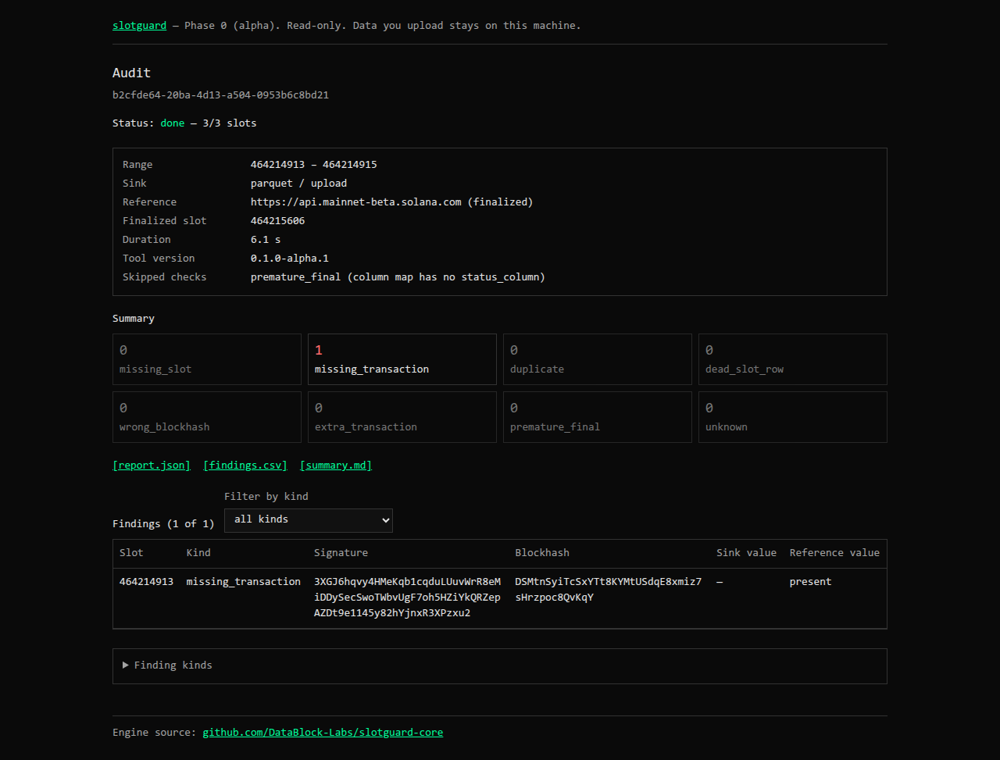

DataBlock Labs / build log
What we built: 2026-10-30 to 2026-11-02
Four days of work across two sites and one new open-source tool. Every number on this page comes from a measurement or a test run. Nothing here has users or customers yet, and this page does not say otherwise.
01 datablock.pro rebuilt in Rust
We rebuilt datablock.pro as a static Leptos 0.8 site on the DataBolt design system.
- Every route is pre-rendered: home, services, products, use cases, work, notes, about, contact, book, 404, sitemap and robots.
- WebAssembly loads only for islands: the contact and newsletter forms, the chat panel, the X feed (on click) and the mobile menu.
- The build reads project status at build time, in Rust, with tests. It fails soft when a token is not set.
- 301 redirects keep the old Next.js URLs alive.
- SEO: a canonical URL and a 1200×630 share image on every page, and JSON-LD on the home page. One broken link (a 404) is fixed.
Checks: cargo test (15 pass), clippy clean, a crawl of 40 pages with 0 broken internal links, no sideways scroll at 375 px or 1440 px.
02 Web3 data engineering field guide
A series hub at datablock.pro/notes/web3 with ten sourced notes in two tracks:
- Business: the 2026 market, needs by company type, GENIUS, MiCA and DAC8 data work, build or buy, AI agents and chain data.
- Engineering: the decentralized stack, reorgs and finality, contract decoding, an analytics lakehouse and a real-time trading architecture.
From the next site release, the /work page lists three open-source tools in progress: slotguard, canonlake (reorg-safe EVM chain data in Delta Lake) and stabletrail (open evidence tables for stablecoin supply). canonlake and stabletrail are designs only.
03 slotguard: Phase 0
slotguard audits a Solana transaction pipeline. It reads the rows your pipeline wrote, compares
them slot by slot with finalized blocks from Solana RPC, and reports each problem with its evidence:
missing slots and transactions, duplicates, rows in dead slots, wrong blockhashes and rows marked final too early.
It is read-only: it reads Postgres inside a READ ONLY transaction and never writes.
| Repo | Job | Stack | Visibility |
|---|---|---|---|
| slotguard-core | Audit engine and CLI: slot classifier, findings, RPC reference, Postgres and Parquet sinks, JSON/CSV/Markdown reports | Rust 2024 | public |
| slotguard-api | HTTP API and job runner: validation, limits, DSN host allowlist, log redaction, report store | Rust, axum, tokio | private |
| slotguard-web | Start an audit, watch progress, read and download the report | Next.js, TypeScript, Tailwind | private |
| slotguard-docs | Architecture, roadmap, ADRs and specs | Markdown | private |
browser ──► slotguard-web ──► slotguard-api ──► slotguard-core ──► Solana RPC (getBlock, finalized)
│ │
│ └─► your sink: Postgres table or Parquet files
└─► report: JSON · CSV · Markdown
On 2026-11-01 a 3-slot mainnet audit ran end to end on localhost: web UI, API, engine, public RPC, report in the browser. The Parquet test file had one transaction removed, and slotguard found it:

Try it: a public demo runs at slotguard-web.vercel.app (since 2026-11-03). Click Load the sample, then Run audit. The demo takes Parquet uploads only, up to 20 slots and 10 MB.
Status: alpha. Not on crates.io. The demo has no accounts and keeps reports for at most an hour. Phase 1 (accounts, saved audits) and Phase 2 (inside a customer's data platform) are designs only. The public endpoint served about 0.5 getBlock calls per second without HTTP 429, so 1,000 slots take about 33 minutes; long ranges need a paid RPC endpoint.
04 A measured performance loop
We added a website track to our self-improve agent skill. The loop is:
measure → find the cause → make one change → gate it → keep or revert → log it.
The gate is a small Python script around Lighthouse 12 (mobile preset, median of 3 runs).
It gives KEEP only when the target metric gets better by more than 5% on every page and no other metric gets worse.
Results
| Site | Cause | Fix | Result | State |
|---|---|---|---|---|
| datablock.pro | The mobile menu collapsed only after hydration, so the page jumped (CLS 0.37) | A CSS @media (scripting: enabled) rule shows the collapsed menu from the first paint | CLS 0.37 → 0; score 0.78 → 0.96 on /, /services and /work | merged live after the next site build |
| databolt.dev | The closed sidebar kept its links in the DOM, so Next.js prefetched every route on each load | Prefetch drawer links only while the drawer is open | Requests 79 → 44 (/), 67 → 32 (/challenges), 79 → 43 (/learn); about 70 KB less per page; TBT on / 413 → 295 ms | live |
Both results come from local production builds, not from field data.
One skill, four agent harnesses
The same skill runs in every agent harness we use. Each harness gets the model that fits the job:
| Harness | Model | Scope |
|---|---|---|
| Claude Code | Sonnet for attempts, Opus for the monthly review of the loop | Full loop |
| Orca | Sonnet (launched with --model) | Full loop |
| Hermes | Sonnet | Full loop |
| pi | Haiku 4.5 (short copy of the skill, about 200 words) | Measure and gate only, to keep token cost low |
05 Writing
Four new notes are merged and go live on datablock.pro with the next site build:
- When your chain data vendor goes dark: the Allium incident and a two-source check, with SQL (Web3 series, engineering).
- NEAR Intents passed $30B: the data you need to watch it (Web3 series, field report).
- Databricks cost does not go away, it moves: an explainer and a checklist.
- Silent wrong data: four twists every pipeline should survive.
06 Rules we kept
- No invented numbers, users or clients.
- Secrets live only in environment variables. Automated tests never call mainnet.
- One change per attempt, on a branch, behind a review.
- Docs are written in ASD-STE100 Simplified Technical English.